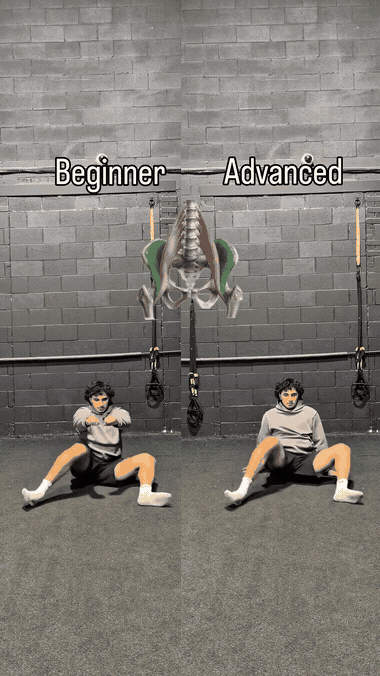
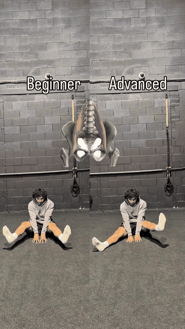

Standing hip flexion against a band builds the active hip lift runners need on every stride — training the lead knee to drive up with stiffness and control.

Crossover hip drive trains the rotational hip engine behind cutting and lateral acceleration — the step that lets a runner change direction sharply without losing the hips.